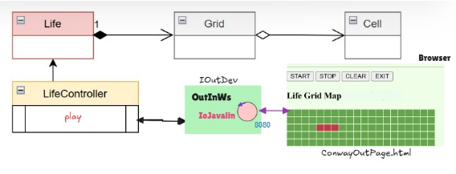

In quanto sistema distribuito, sono presenti due parti che devono interagire in modo opportuno scambiandosi messaggi:
- L'applicazione (conseguita nello Sprint 1), che chiamiamo lifectrl.
- Il server che eroga la pagina HTML, che chiamiamo guiserver
Lifectrl si deve manifestare al guiserver aprendo una connessione via webseocket sulla porta 8080.
La comunicazione tra browser e il server è bidirezionale e deve rimanere aperta per tutto il tempo necessario.

- Analisi della comunicazione pagina-server
La pagina comunica con il guiserver usando stringhe strutturate, in modo che guiserver possa ricavare dalla stringa,
oggetti coerenti con l'interfaccia IApplMessage:
msg( MSGID, dispatch, SENDER, guiserver, CONTENT, SEQNUM )
Ciò viene fatto in particolare per rendere il livello applicativo tecchnology-independent.
I messaggi inviati di tipo dispatch, ovvero fire and forget, in quanto non richiedono una risposta, ma
vogliono solo creare un'azione lato server.
Inizialmente la pagina ha come nome "unknown", che verrà usato come nome del sender alla prima connessione
msg( MSGID, dispatch, unknown, guiserver, CONTENT, SEQNUM )
Il Server risponde alla richiesta di connessione di una nuova pagina, creando ed assegnando alla pagina
un nuovo nome (pagename). Inoltre per far fede al Requisito R3, è necessario memorizzare la prima connessione
che prende il ruolo di owner.
msg( MSGID, dispatch, pagename, guiserver, CONTENT, SEQNUM )
Dopo la connessione possono essere inviati dei comandi dalla pagina al server, formalizzati come dispatch, sempre in ossequio al requisito R3,
solo il coller1 deve potre inviare i comandi. Il content varia a seconda del tipo di comando:
msg( do, dispatch, caller1, guiserver, CONTENT, SEQNUM )
CONTENT potrà essere una semplice String quale start/stop/clear/canvasready
Quando una pagina invia dispatch al guiserver dovrà inviare a sua volta un messaggio di comando a lifectrl.
Per semplificare il codice, i messaggi inviati dalla pagina al server possono avere come destinatorio
direttamente il nome lifeCtrl.
msg( do, dispatch, caller1, lifeCtrl, start, SEQNUM )
- Analisi della comunicazione Server-Pagina
Nella comunicazione tra il Server e la Pagina, i messaggi non sono Strutturati, come prima, per evitare di obbligare la pagina a
comunicare con messaggi strutturati in questo modo. Pertano il server invia alla pagina comandi espressi da semplici stringhe
ID:name //par dare il valore name al nome della pagina
cell(X,Y) //per commutare lo stato di una cella (griglia granulare)
[[false,false, ... ]] //per specificare lo stato di una griglia globale
Messaggi siffatti possno essere interpretati e gestiti direttamente in JavaScript dalla pagina
- Analisi delle comunicazioni guiserver-applicazione
Tutta la logica di interazione tra l'applicazione e il guiserver deve essere gestita dalla
classe OutInGuiInteraction, che implementa IOutDev
nel componente applicativo. Ereditando dallo sprint 2, il sistema applicativo si configura nel seguente modo:
LifeInterface life = new Life( 20,20 );
IOutDev iodevgui = new OutInGuiInteraction( ); //dispositivo di I/O
GameController cc = new LifeControllerAdhoc(life, iodevgui) ;
((OutInGuiInteraction) iodevgui).setController(cc); //iniezione del controller
OutInGuiInteraction implementa la classe IObserver per gestire comunicazioni bidirezionali asincrone. Tutti i messaggi
(ri)trasemssi dal guiserver verranno percepiti e gestiti atraverso i metodi update.
Il controller lifeCtrl viene pertanto opportunamente invocato dal metodo update, gestendo i
comandi in arrivo e inviando a sua volta messaggi di comando al guiserver.
Questi messaggi sono formalizzabili come dispatch che indicano al guiserver di modificare la visualizzazione
della griglia.
CommUtils.buildDispatch("lifectrl", "eval", msg, "guiserver" );